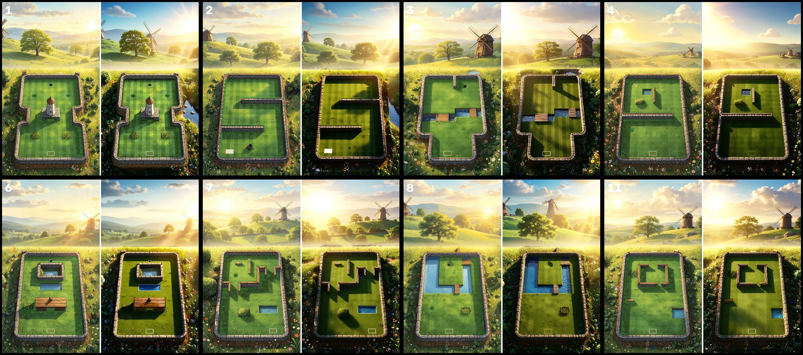
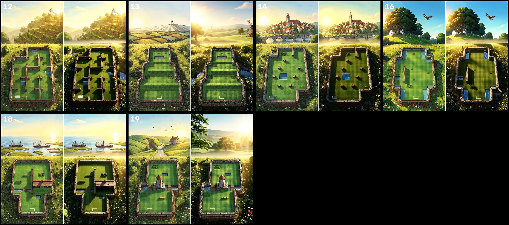
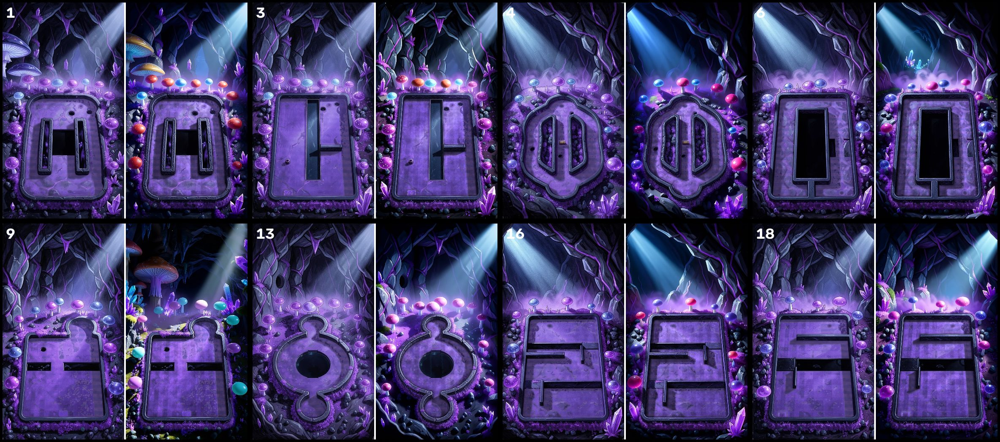
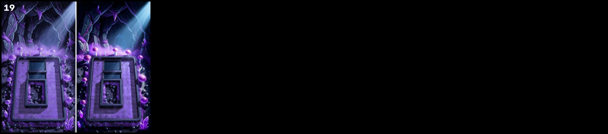

Cinematic look · every hole
Each picture pair is the hole now (left) and new (right). Tap a number to play the new hole. A ° means the course itself was kept and only the look around it changed (no repaint passed the checks).
World 1 · Meadow 14 new · not in this pass: 5 (tall hole), 9 (tall hole), 10 (tall hole), 15 (tall hole), 17 (tall hole), 20 (tall hole)
1° 2 3 4 6 7 8 11 12 13° 14 16 18 19°


World 7 · Lumen Grotto 9 new · not in this pass: 2 (no current plate), 5 (tall hole), 7 (no current plate), 8 (no current plate), 10 (tall hole), 11 (no current plate), 12 (no current plate), 14 (no current plate), 15 (tall hole), 17 (no current plate), 20 (no current plate)
1° 3° 4° 6° 9° 13° 16° 18° 19°

